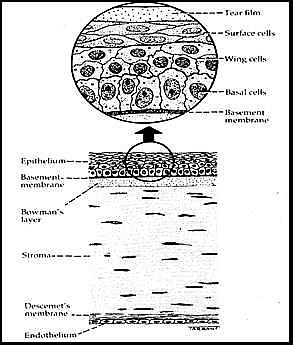

Cornea · Anatomy
Micro-anatomy
1) Epithelium:
- It is a stratified squamous non-keratinized epithelium.
2) Bowman membrane:
- It is a homogenous condensation of the anterior stroma.
- It is non-elastic with low resistance and when injured it doesn't regenerate.
3) Substantia propria (stroma):
- It represents 90% of the corneal thickness, it's formed of:
- Ground substance of uniform refractive index formed of mucopolysaccharides.
4) Descemet’s membrane:
- It is the basement membrane of the endothelial cells.
- It is highly elastic with high resistance and when injured it can regenerate.
- It is secreted by the endothelium.
5) Endothelium:
- It is a single layer of flat hexagonal cells to perform barrier function.
- At the limbus it becomes continuous with the endothelium of the trabeculum and that on the anterior surface of the iris.
